Forty years of shirts and a website that never asked anyone for a job. We built a new one that does, and a back room where the shop can see it all. Everything on it bends to how you actually work. This page is the idea, the next two are the questions.
Your photos, your voice, one red. People can send art, ask for a run, see the work and find the shop. Runs start at the blank, with the real catalog colors. Prints you already have screens for can sell straight off the rack. Nothing on it is stock.
Every request lands in one place. Start a run from it, add the garments, send a quote. The customer taps accept on their phone and you are told. Stock on the shelf with initials on every move. Customers with history. Notes to the crew. Everything priced by you, in the app, any time.
This is a custom build, not a template, with a back end anyone on the crew can use. Words, prices, photos, colors, what is on the menu, all of it changes from Backstage. If you ever want the front of the site to move, we build that in too. It is made to be tailored to the way your day already runs, not the other way around.
Tell us the kind of order you enjoy most and we point the site at it. Backstage gets a small marketing corner that shows what people looked at and asked for, so the shop can see which door they came through and go find more of the same.
This is a local handoff, one Ridgway business helping another. The site is built and running on a test address. What we need from you fits on the next two pages, and none of it is technical.

Short answers are great. Long ones are better. Write on this, email it back, or just call and talk through it with us.
Send this back any way you like, a photo of it is fine. We fold the answers into the site, walk you through Backstage in person, and move the web address when you say go. Call or write any time, tyler@neonburro.com.